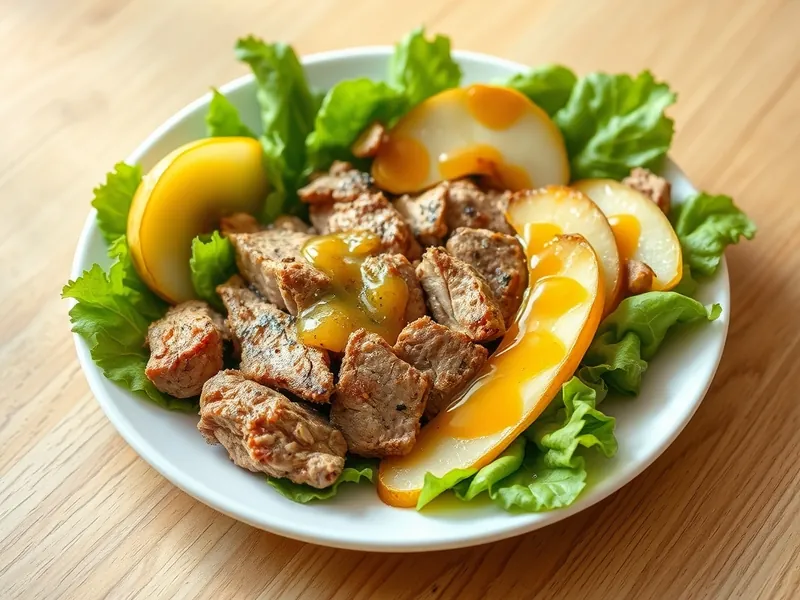

Тёплый салат с куриной печенью и грушей
Обжаренная куриная печень и карамелизованная груша на листьях салата с медово-горчичной заправкой
25 мин2 порц.386 ккал на порциюБ 30 · Ж 22 · У 16Европейская кухня
Открыть в приложении: порции, таймеры, список покупок
Продукты на 2 порц.
- Куриная печень300 г
- Груша1 шт
- Салат листовой100 г
- Сливочное масло10 г
- Оливковое масло1 ст. л.
- Мёд1,5 ч. л.
- Горчица2 ч. л.
- Лимон0,2 шт
- Соль2 щеп.
- Перец чёрный молотыйпо вкусу
Как готовить
- Печень промойте, срежьте плёнки и протоки, обсушите полотенцем и разрежьте пополам.
- Грушу очистите от сердцевины и нарежьте дольками. Обжарьте на сливочном масле на среднем огне по 2 минуты с каждой стороны до золотистого цвета, переложите на тарелку.
- В ту же сковороду налейте немного оливкового масла, разогрейте на сильном огне и выложите печень в один слой. Жарьте по 2-3 минуты с каждой стороны: снаружи румяная, внутри слегка розовая. Посолите и поперчите.
- Для заправки смешайте оставшееся оливковое масло, мёд, горчицу и лимонный сок.
- Разложите листья салата по тарелкам, сверху тёплую печень и грушу, полейте заправкой и подавайте сразу.
Совет. Солите печень только в конце жарки, иначе она станет жёсткой. Не перекладывайте в сковороду слишком много за раз: печень пустит сок и сварится вместо обжаривания.